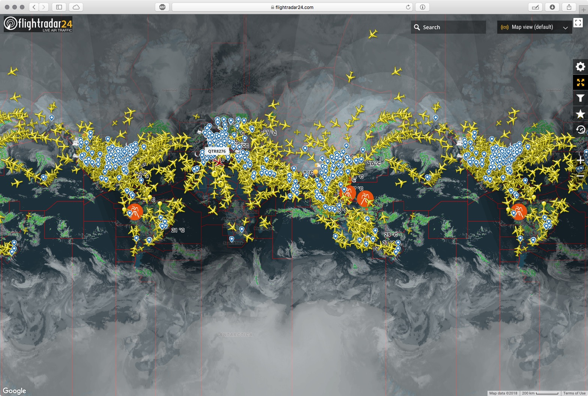

For this research, I've found two pages that are similar to mine.
The first one is a service that provide realtime radar-like information of globe flights, it is called Flightradar24:

The service depends on a technology called Automatic Dependent Surveillance-Broadcast installed on most aircrafts, ADS-B for short, which automatically broadcasts information of the aircraft like location, callsign, altitude, speed, heading, transponder code and aircraft type to everyone, and the service recruits volunteers to install their ADS-B receivers around the world to gather those informations in realtime and transmit them back to their data center for visualization.
Needless to say, this service is very powerful: it enables you to see virtually every single flight in the world with its ADS-B transmitter on and get notifications if any aircraft sends out an emergency transponder code, like 7700 for general emergency.
In other words, you have a God-like view on the this Earth’s flights! That notion is very exciting to me.
Although a powerful tool, this visualization is not really what I am looking for my project: my project focuses on the diversity brought on by the exchanges of people and ideas through flights, in other words, flights are just a vehicle and it should not be the center stage of priority (although it could be at the center stage of the interaction itself).
First, the visualization focuses on the real-time quality: we can’t see flights of the past, only what’s happening now.
Second, there is no direct visualization of the flights destination or origin: the visual part only shows the aircraft’s type, position in the world and heading, we can only destination and origin from the text, so the sense of context is very weak for demonstrating flights in and out of Hong Kong.
Third, it shows flights in a small scale: you could not zoom out too much, or your screen will be filled with little plane icons and you cannot tell what you’re looking at, so it is not useful for showing the global reach of flights in and out of Hong Kong, and its visualization is on a plane, instead of a globe, that you can see at single glance where do all those flights come from and go to, that also weakens the sense of context for delivering a particular message, like diversity.
Fourth, the interaction is not very responsive: dragging and clicking is always laggy, probably due to the amount of data it is processing.
Finally, it only shows individual flights, instead of the actual routes and number of flights that are between Hong Kong and the world.
So to sum it up, this service is a very good at showing information on a single flight or to visualize the flights over a small area, a handy tool for aviation enthusiasts like to explore and have fun, but not so good in showcasing diversity through flights.
The second is a visulization developed by Hong Kong University of Science and Technology:
This project is a demo built by HKUST’s VisLab, a multidisciplinary group aiming at improving the visual analysis and various visualizations.
This visualization is almost exactly what I wanted for my project:
First, it uses a globe to represent the Earth and the that representation implies globalization and creates a strong context for diversity.
Second, it utilizes a system of arc and dots to showcase the flights: each line represents a route from/to Hong Kong from a point on the globe, and dots represent a single flight using that route, in this way, the viewer can get a sense of how busy Hong Kong is as Asia’s World City at a glance from the intensity of light and number of lines.
Third, it has the option to only display deaprting or arriving flights, that could be useful for the storytelling of Hong Kong exporting and importing diversity.
And finally, this visualization would do very well in delivering the message for a diverse and globalized world and showcase Hong Kong and air travel’s role in enabling that.
But there are also some shortcomings. Since I don’t have more information on this project, I can only surmise the reasons why these shortcomings emerge.
First, the destinations are not precise: it only shows countries, not the individual cities, and that makes the lines more sparse and the dots more dense. And this is detrimental to the message of diversity. But I can see why it was done in this way: since Hong Kong has so many flights to so many cities, if they were all individually represented, that would be a very substantial amount of data.
Second, it is missing some destinations: for example, there is no line from/to South America, and I am certain that Hong Kong has flights to/from Mexico, so the data needs to be updated.
Overall, I think this is really what my project is trying to achieve, except for some small flaws.
{kind=link}